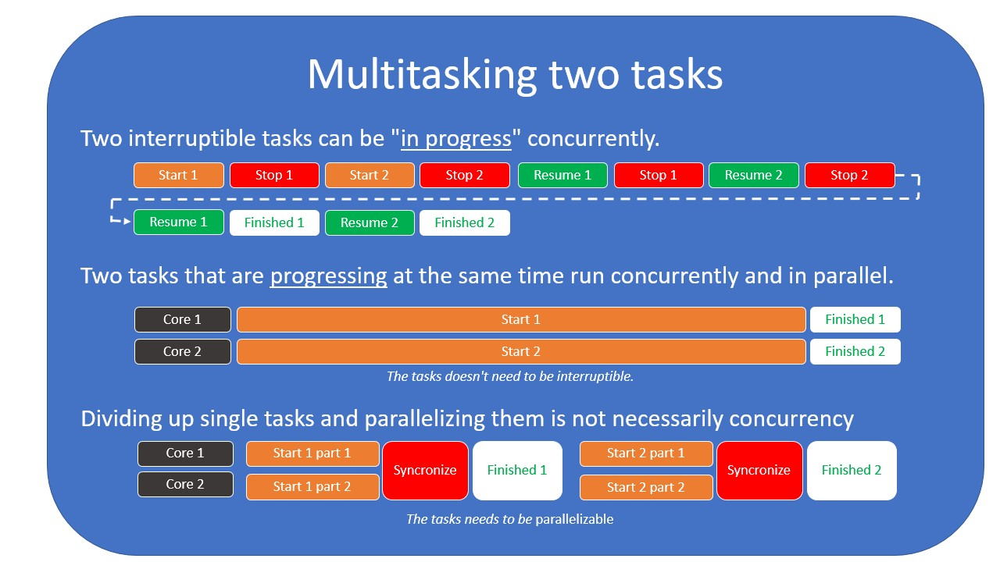

并发与并行的区别
马上要讲定义并发是什么了。 由于并发 (concurrency) 与并行 (parallel) 很容易被混淆， 这里尽量清楚地介绍两者的区别。
并发是关于在同一时间 处理 许多事情。
Concurrency is about dealing with a lot of things at the same time.
并行是关于在同一时间 做 许多事情。
Parallelism is about doing a lot of things at the same time.
同一时间进行 (progress) 多个任务被称作多任务 Multitasking 。
有两种多任务的方式：
- 以并发的方式进行任务，但并不在同一时间
- 真正在同一时间以并行的方式进行任务

从定义出发
资源
资源 (resources) 可以是 CPU 的时间或者内存。
有时候，任务进行过程中，资源会受到的限制。
任务
任务 (tasks) 指一组要求某种资源进行下去的操作。
一个任务必须由一些子操作 (sub-operations) 组成。
并行
并行 (parallel) 是真正在同一时间独立发生的事情。
并发
并发 (concurrency) 描述的是：多个任务在同一时间处于进行的状态中 (in progress)， 但不一定同时进行 (be progressing) 。
这是与并行的一个重要区别。
如果两个任务并发执行，而不并行执行，那么它们必须能停下来和继续进行下去。
如果一个任务可以按照这种方式并发执行，那么就称这个任务是 “可中断的” interruptable 。1
译者注：progress 翻译成 “进行”，run 翻译成 “执行”。两者应该没有区别。
心智模型
我坚信，很难理解并行和并发编程之间的区别源自于我们每天对事件的理解方式不同。 我们倾向于不那么严格地定义这两个术语，所以我们的直觉通常是错误的。
字典里所定义的 “并发” 概念 —— 在同一时间运作或发生 —— 并不会帮助我们描述并发如何与并行不同。
对我来说，当我理解为何一开始就想弄清楚并发与并行的区别时，我豁然开朗！
效率指的是做某事或产生期望的结果时，避免浪费物质、能量、努力、金钱和时间的能力，它通常可以测量。
译者注： utilization 效用，这里可能指使用资源带来的（好的）作用。
并行
并行 (parallelism) 增加了用于完成任务的资源；并行与效率无关。
并发
并发 (concurrency) 与资源的效用和效率都有关。
并发无法让单个任务更快完成，它只能帮助更好地使用资源，从而更快地完成一组任务。
谈谈过程经济学
在商品制造业中，我们常提到精益过程 (lean processes) 。 这很容易类比程序员特别关心并发处理任务可以带来什么。
这段三分钟的视频有助于理解： 冲咖啡中的精益过程 。
好了好了，这个视频有些年头，但它在短短三分钟内解释了很多问题。
最重要的是，我们运用精益技术从而获得了好处（提高效率），以及 减少了等待和无额外价值的任务 。
在编程领域，可以说我们想避免阻塞
blocking和忙轮询3。
译者注：poll in a busy loop 忙轮询，采用死循环方式轮询每一个流。
增加更多资源（员工）会改进视频里冲咖啡这件事吗？ 答案是，会改进的。但使用了两个员工，结果只和一人冲一杯咖啡一样，而且还有待精简过程。 此时，增加资源并不会让已有的资源效用最大化。
利用并行，我们可能通过以下方式解决等待 I/O 事件造成 UI 冻结的问题： 开启一个新线程，在新线程上而不是在主线程上轮询或者阻塞。 然而那个新线程要么啥也不做地消耗掉资源，要么更糟糕地使用一个核来忙轮询，检查事件是否准备就绪。 无论哪种情况，都不是最优情况，尤其当你想完全利用服务器 (server) 的资源（完全发挥服务器的效用）。
把咖啡机看作某种 I/O 资源，我们开启一个线程，让线程执行下去，准备下一个任务， 或者做些其他的工作，这些工作需要立刻执行而不是等待。
不过，这场景是不是以并行方式发生呢？
是的，咖啡机在冲着咖啡，而员工在做些护养（保持咖啡机正常工作）、给机器加水，这的确是并行。
但以下才是关键：我们站在员工的角度看问题，而不是站在整个系统的角度；冲咖啡的人就像你写的代码。
这和你进行数据库查询也是一样的。 你向数据库服务器发送完查询的指令，数据库的 CPU 会依照你的请求工作，而你等待响应。 实际上，你的工作就是一种并行。
并发是更聪明地工作；并行是投入更多资源到问题上。
并发与 I/O
你或许明白了现在我写的东西，当你需要更聪明地最优使用资源，编写异步代码基本上很有用。
如果你编写的程序很难解决某个问题，并发通常对此没啥帮助， 这是并行的主场，因为如果你能把这个问题拆分成可并行处理的小部分， 那么就能对它投入更多资源。
我认为在两个主要的场景下使用并发：
- 执行 I/O 操作时，你需要等待某些外部事件发生
- 当你需要分散注意力来防止一个任务等待太长时间
第一种情况的典型 I/O 例子： 你不得不等待一个网络调用、数据库查询或任务进行前的发生的某件事情。 然而你有很多任务要运行，所以你不能干等，你在某些事情上进行着， 要么定期查看任务是否准备好要进行下去，要么在任务准备好进行下去的时候确保这事被通知到位 (notify) 。
第二种情况的例子常常发生在 UI 领域。 假设你的机器只有一个核，在进行其他 CPU 密集型任务的时候，你该怎样阻止整个 UI 无响应呢？ 呃，你可以每 16 ms 停止运行中的任务，然后运行 “更新 UI” 的任务，再恢复原本停下来的任务。 这样，你就必须每秒停止或恢复任务 60 次，而你也得到一个完全响应式的 UI ， 这个 UI 大概以 60 Hz 频率刷新。
OS 提供的线程
本书将在 处理 I/O 的策略 一章对线程详细介绍，但这里也会提到一些。 使用 OS 线程理解并发的一个难点是：线程似乎映射到核上。 即使大多数操作系统尽量把一个线程映射到一个核上，直到线程数等于核数，这未必是正确的心智模型。
一旦创建超过核数量的线程， OS 会在我们创建的线程间切换，并发地执行每个线程， 使用调度程序 (scheduler) 来给每个线程一些时间运行。 你还得考虑到 OS 上不止运行你编写的程序这个事实。 其他的程序也可能开启 (spawn) 多个线程，这意味着超过 CPU 上的核数的许多线程会存在。
因此，线程可能是以并行方式执行任务的一种方式，而且也可能是实现并发的一种方式。
这涉及此章的最后一部分：在某种参照系中定义。
转换参照系
当你站在自己的角度编写完全同步 (synchronous) 的代码时， 停下来想想从操作系统的角度这些代码是什么样的。
OS 或许根本不会从头到尾执行你的代码，它或许会多次暂停和恢复你程序所在的线程。
CPU 可能被中断，然后处理一些输入，而你觉得它只忙于你的任务。
所以同步执行只是一场错觉。只是你作为程序员，从你的角度看，同步执行真实存在，而以下是重点：
在没有任何语境的情况下谈论并发时，你是以程序员和你写的代码（所处的进程）作为参照系的。 你如果没有牢记这一点，那么在思考并发时，很快就糊涂了。
在这一点上花费很长时间解释，目的是只要你意识到这一点， 你就会开始察觉到有些你所听闻和学习的东西或许看似矛盾，实则不然。 你只需要首先思考一下参照系是哪个。
如果这听起来还是很复杂，我能理解你。仅仅坐着就想清楚并发是很难学会并发的。 但是如果我们试着在处理异步代码时，将这些想法牢记于心，我保证它会变得越来越不令人费解。